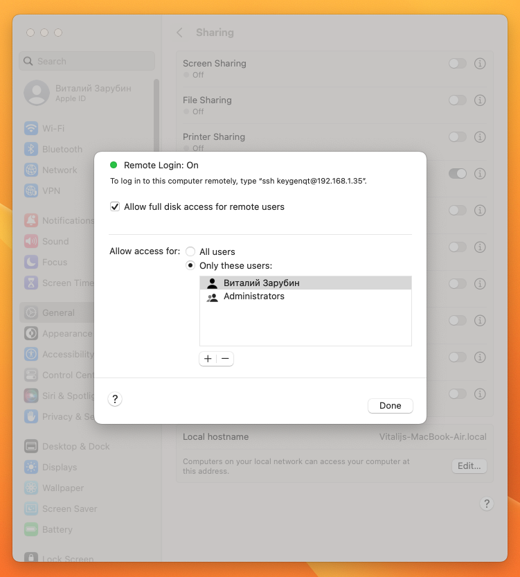
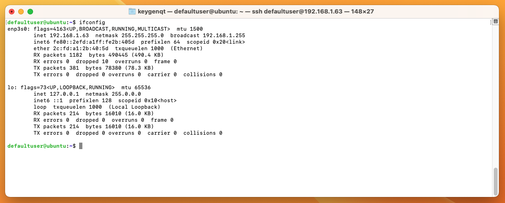
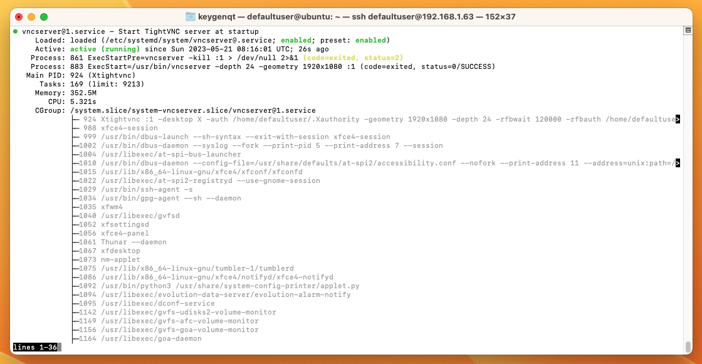
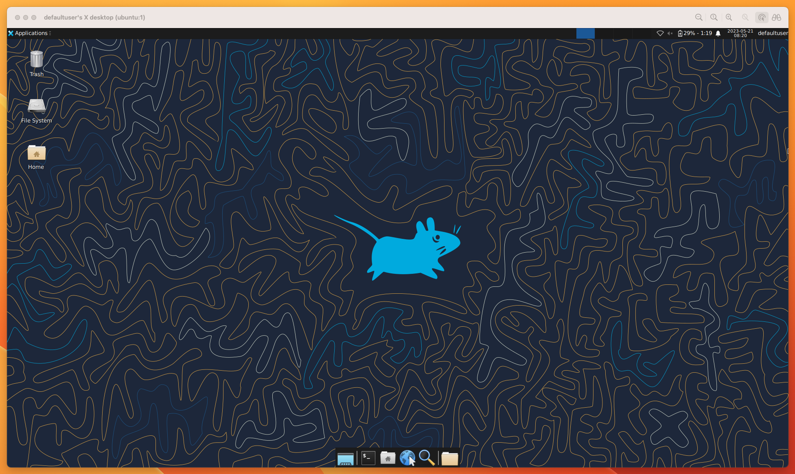
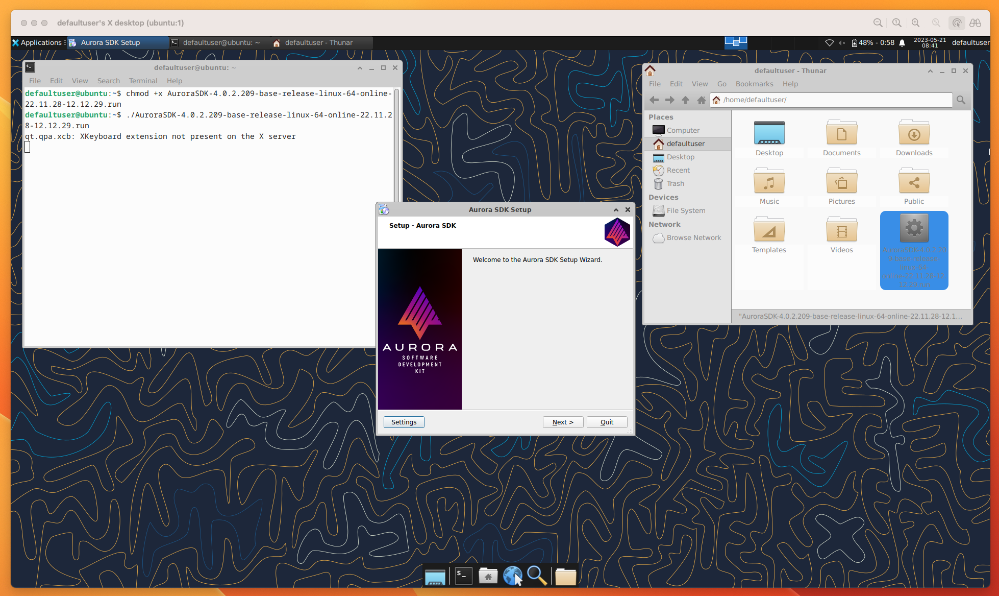
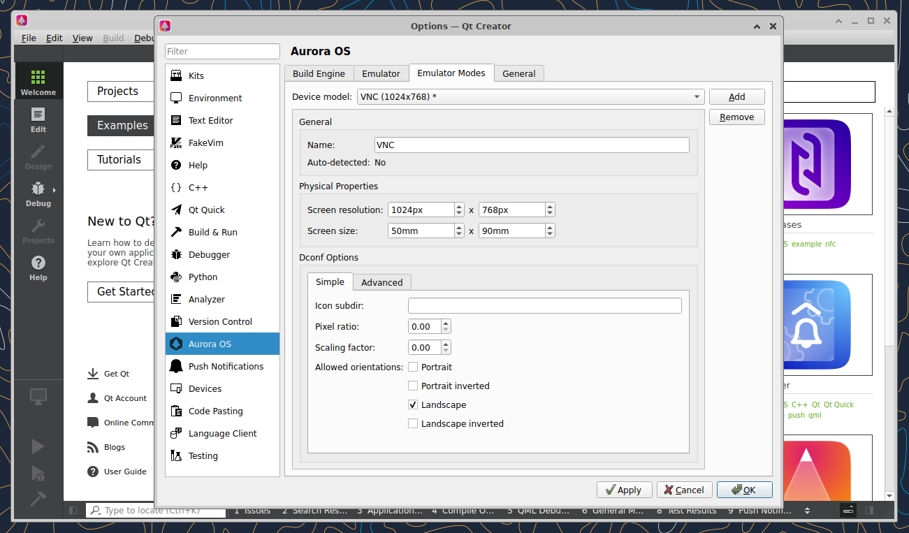
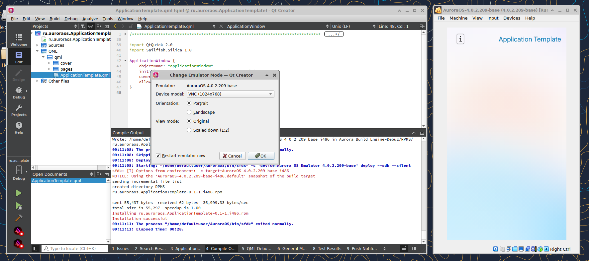
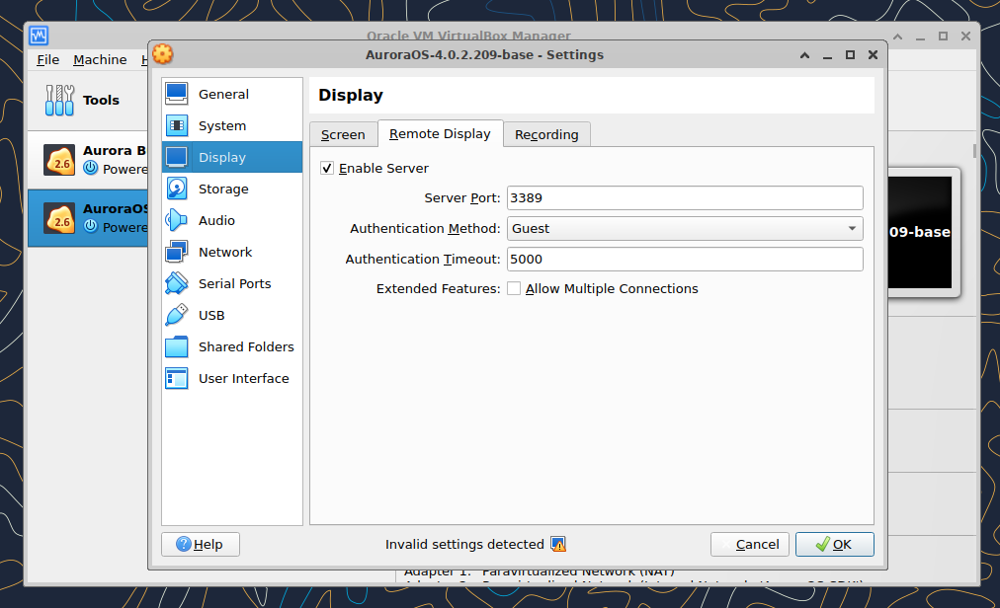
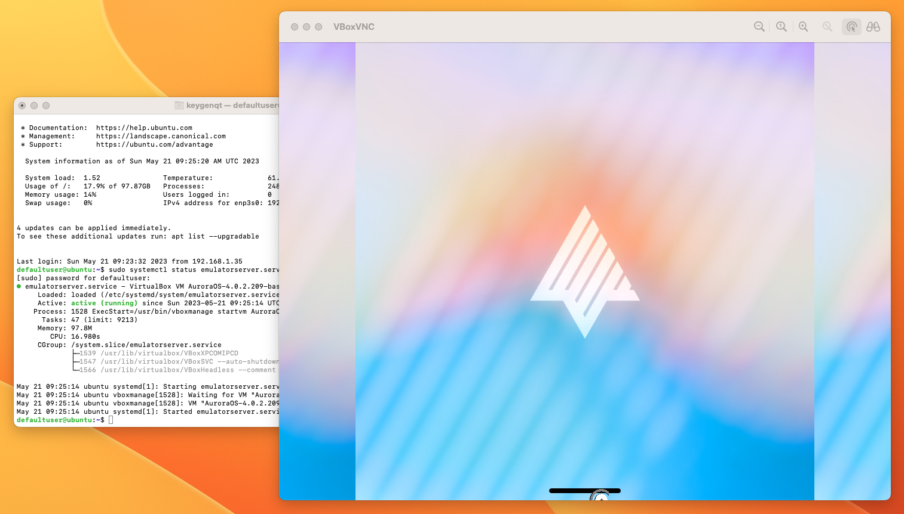
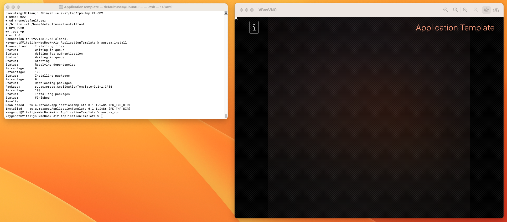

Mission impossible, Aurora + M1
Средства разработки Aurora OS не доступны для архитектуры arm. Но есть большое желание работать на macOS M1/M2? Мне удалось организовать удаленную работу с Aurora OS. Работает это по локальной сети в связке с сервером на x86. У многих есть старая железка на x86, она подойдет для этого и вам не придется на прямую работать на ней.
Подготовка
В macOS нам нужно включить ssh и доступ к директориям.
Для этого перейдите в настройки General->Sharing активируйте Remote Login.
После этого включите Allow full disk access for remote users

Там же указан ваш IP и логин которые понадобится для ssh подключения.
У меня это ssh keygenqt@192.168.1.35.
Я бы рекомендовал зайти в настройки роутера и зафиксировать локальные IP, что бы они не менялись.
На машине x68 ставим Ubuntu server 23.04 с OpenSSH.
Я бы не рекомендовал экспериментировать с другими linux дистрибутивами (ну если есть желание, пожалуйста).
На Ubuntu 22.04 эмулятор мне завести нормально не удалось, на 23.04 все ок.
При установке я указал юзера defaultuser.
IP можно узнать установив net-tools
и выполнив команду
Примерно это вы увидите на машине. Я схалтурил, по ssh уже выполнил команду, вам это нужно будет сделать на машине. Ну не фоточку же сюда крутить, скриншот красивше. Не забудьте и этот фиксануть IP в роутере.

И того у нас должны быть "на руках":
- Включенный ssh на macOS
- Включенный
Allow full disk access for remote usersна macOS - Машина x86 с установленной туда Ubuntu server 23.04
- Установленный OpenSSH на Ubuntu server
И данные которые нам понадобятся для настройки:
- IP macOS - у меня это
192.168.1.35 - Login юзера на macOS - у меня это
keygenqt - IP Ubuntu server - у меня это
192.168.1.63 - Login юзера на сервере - у меня это
defaultuser - Пароли к двум серверам - у меня это
the secret
Можно приступать.
SSH
Открываем на macOS Terminal. Сервер с Ubuntu можно отложить, он нам доступен по ssh и больше физически не понадобится. Первым делом нужно обменяться публичными ключами для доступа.
(команды я буду приводить исходя их своих данных, у вас они могут отличатся)
Создаем ключ на macOS:
Добавляем ключ на сервер:
Теперь мы можем зайти на сервер без пароля:
Создаем ключ на сервере:
Добавляем ключ на macOS:
Этим мы убрали нужду вводить пароли каждый раз при доступе машин к друг другу.
VNC Ubuntu server
И так у нас открыт в терминале на macOS сервер Ubuntu.
Если у вас ноут, и вы хотите его закрыть и закинуть на шкаф, это можно организовать.
Для того что бы Ubuntu не уходила в sleep добавьте в /etc/systemd/logind.conf строчку HandleLidSwitch=ignore
echo 'HandleLidSwitch=ignore' | sudo tee -a /etc/systemd/logind.conf
sudo systemctl mask sleep.target suspend.target hibernate.target hybrid-sleep.target
Для установки Аврора SDK в котором есть нужный нам эмулятор потребуется графический интерфейс. А так как мы ленивые и не хотим вставать из за стола, подключать к серверу монитор, лезть на пыльный шкаф, и ставить все на машине, сделаем это через VNC и ssh.
Установим на сервер: Xfce:
Установим VNC сервер, фейковый монитор, и нужные зависимости.
Добавим настройки фейкового монитора:
read -r -d '' conf <<-EOF
Section "Device"
Identifier "Configured Video Device"
Driver "dummy"
EndSection
Section "Monitor"
Identifier "Configured Monitor"
HorizSync 31.5-48.5
VertRefresh 50-70
EndSection
Section "Screen"
Identifier "Default Screen"
Monitor "Configured Monitor"
Device "Configured Video Device"
DefaultDepth 24
SubSection "Display"
Depth 24
Modes "1920x1080"
EndSubSection
EndSection
EOF
echo "$conf" | sudo tee -a /usr/share/X11/xorg.conf.d/xorg.conf
Настроим пароль VNC сервера:
Добавим кофиг xstartup:
read -r -d '' conf <<-EOF
#!/bin/bash
xrdb $HOME/.Xresources
startxfce4 &
EOF
echo "$conf" > ~/.vnc/xstartup
chmod +x ~/.vnc/xstartup
Добавим конфиг systemd сервиса который будет запускать VNC сервер при старте машины:
read -r -d '' conf <<-EOF
[Unit]
Description=Start TightVNC server at startup
After=syslog.target network.target
[Service]
Type=forking
User=defaultuser
Group=defaultuser
WorkingDirectory=/home/defaultuser
PIDFile=/home/defaultuser/.vnc/%H:%i.pid
ExecStartPre=-vncserver -kill :%i > /dev/null 2>&1
ExecStart=/usr/bin/vncserver -depth 24 -geometry 1920x1080 :%i
ExecStop=/usr/bin/vncserver -kill :%i
[Install]
WantedBy=multi-user.target
EOF
echo "$conf" | sudo tee -a /etc/systemd/system/vncserver@.service
sudo systemctl daemon-reload
sudo systemctl enable vncserver@1.service
Перезапускаем машину и можно проверить все ли ок с сервисом:

Теперь переходим в Safari и в url пишем: vnc://192.168.1.63:5901

Установка Аврора SDK
Теперь нужно уставить SDK. Качаем его в терминале сервера с Ubuntu:
wget https://sdk-repo.omprussia.ru/sdk/installers/4.0.2/AppSDK/4.0.2.209/AuroraSDK-4.0.2.209-base-release-linux-64-online-22.11.28-12.12.29.run
Для установки нам потребуется VirtualBox, установим его:
Можно приступать к установке Аврора SDK по VNC. Здесь ничего сложного запускаем скачанный *.run. Выбираем VirtualBox когда спросят и далее, далее, далее...
chmod +x AuroraSDK-4.0.2.209-base-release-linux-64-online-22.11.28-12.12.29.run
./AuroraSDK-4.0.2.209-base-release-linux-64-online-22.11.28-12.12.29.run

Настройка VNC эмулятора
Теперь мы можем настроить VNC для эмулятора. С настройками позиции эмулятора все сложно, я нашел режим который позволит адекватно его запустить по VNC. Мы будем запускать VM в headless режиме и нам нужно что бы эмулятор не лежал на боку и вообще работал. Нам нужно установить ему разрешение доступное для видео карты. Для этого переходим в Aurora IDE. В меню выбираем Tools -> Options... -> Aurora OS -> Emulator Modes Создаем кастомную модификацию VM нажав Add. Установим интересующие нас разрешение в привычном для видео карты формате и сохраняем:

Теперь нам нужно установить нашу модель эмулятора. В меню выбираем Tools -> Aurora OS -> Emulator Modes. Если у вас появится "Emulator is not Selected", просто соберите разок тестовый пример, IDE все настроит.

Далее нужно перейти в VirtualBox и включить в настройках эмулятора Remote Display.

После применения модификации и включения Remote Display можно закрывать IDE, Emulator и VNC и возвращаться назад в терминал macOS.
Скажем VB что мы желаем использовать VNC.
Установим пароль для доступа по VNC к эмулятору:
Добавим конфиг systemd сервиса который будет запускать VNC эмулятор при старте машины:
read -r -d '' conf <<-EOF
[Unit]
Description=VirtualBox VM AuroraOS-4.0.2.209-base
Requires=multi-user.target
After=multi-user.target
AllowIsolate=yes
[Service]
User=defaultuser
Group=defaultuser
Type=forking
Restart=no
TimeoutSec=5min
IgnoreSIGPIPE=no
KillMode=process
GuessMainPID=no
RemainAfterExit=yes
ExecStart=/usr/bin/vboxmanage startvm AuroraOS-4.0.2.209-base --type headless
ExecStop=/usr/bin/vboxmanage controlvm AuroraOS-4.0.2.209-base poweroff
[Install]
WantedBy=multi-user.target
EOF
echo "$conf" | sudo tee -a /etc/systemd/system/emulatorserver.service
sudo systemctl daemon-reload
sudo systemctl enable emulatorserver.service
Перезапускаем машину и можно проверить все ли ок с сервисом:
Теперь переходим в Safari и в url пишем: vnc://192.168.1.63:3389

Края будут обрезанные, просто поставьте темную тему. Баг известен, пофиксят. Перейдем по SSH в эмулятор для разрешений:
ssh defaultuser@localhost -p 2223 -i ~/AuroraOS/vmshare/ssh/private_keys/sdk
ssh root@localhost -p 2223 -i ~/AuroraOS/vmshare/ssh/private_keys/sdk
SSHFS
Для доступа к файловой системе с проектами установим на сервер Ubuntu SSHFS:
(Путь к папке с проектами которая будет доступна для сервера у меня указана как /Users/keygenqt/Documents/Projects)
Добавим разрешение:
echo 'user_allow_other' | sudo tee -a /etc/fuse.conf
sudo sshfs -o allow_other keygenqt@192.168.1.35:/Users/keygenqt/Documents/Projects ~/Projects
Добавим автоматическое монтирование в systemd:
read -r -d '' conf <<-EOF
[Unit]
Description=Mount my remote filesystem over sshfs with fuse
After=network.target
After=tailscaled.service
[Install]
WantedBy=multi-user.target
[Mount]
What=keygenqt@192.168.1.35:/Users/keygenqt/Documents/Projects
Where=/home/defaultuser/Projects/
Type=fuse.sshfs
Options=allow_other,noatime,port=22,IdentityFile=/home/defaultuser/.ssh/id_rsa
EOF
echo "$conf" | sudo tee -a /etc/systemd/system/home-defaultuser-Projects.mount
sudo systemctl daemon-reload
sudo systemctl enable home-defaultuser-Projects.mount
Перезапускаем машину и можно проверить все ли ок с сервисом:
Теперь у вас примонтирована папка с проектами в системе Ubuntu.
Aurora Platform SDK
Для сборки проектов поставим Aurora Platform SDK.
На сервере Ubuntu скачаем нужные пакеты:
wget https://sdk-repo.omprussia.ru/sdk/installers/4.0.2/PlatformSDK/4.0.2.209/Aurora_OS-4.0.2.209-base-Aurora_Platform_SDK_Chroot-i486.tar.bz2
wget https://sdk-repo.omprussia.ru/sdk/installers/4.0.2/PlatformSDK/4.0.2.209/Aurora_OS-4.0.2.209-base-Aurora_SDK_Tooling-i486.tar.bz2
wget https://sdk-repo.omprussia.ru/sdk/installers/4.0.2/PlatformSDK/4.0.2.209/Aurora_OS-4.0.2.209-base-Aurora_SDK_Target-i486.tar.bz2
wget https://sdk-repo.omprussia.ru/sdk/installers/4.0.2/PlatformSDK/4.0.2.209/Aurora_OS-4.0.2.209-base-Aurora_SDK_Target-armv7hl.tar.bz2
Устанавливаем:
mkdir -pv ~/AuroraPlatformSDK/sdks/aurora_psdk
echo 'export PSDK_DIR=~/AuroraPlatformSDK/sdks/aurora_psdk' >> ~/.bashrc
echo 'PS1="[AuroraPlatformSDK]$ "' > ~/.mersdk.profile
exec bash
sudo tar --numeric-owner -p -xjf ./Aurora_OS-4.0.2.209-base-Aurora_Platform_SDK_Chroot-i486.tar.bz2 --checkpoint=.1000 -C $PSDK_DIR
$PSDK_DIR/sdk-chroot sdk-assistant tooling create \
Aurora_OS-4.0.2 \
./Aurora_OS-4.0.2.209-base-Aurora_SDK_Tooling-i486.tar.bz2
$PSDK_DIR/sdk-chroot sdk-assistant target create \
AuroraOS-4.0.2-i486 \
./Aurora_OS-4.0.2.209-base-Aurora_SDK_Target-i486.tar.bz2
$PSDK_DIR/sdk-chroot sdk-assistant target create \
AuroraOS-4.0.2-armv7hl \
./Aurora_OS-4.0.2.209-base-Aurora_SDK_Target-armv7hl.tar.bz2
rm Aurora_OS-4.0.2.209-base-Aurora_*
$PSDK_DIR/sdk-chroot sdk-assistant list
С настройкой сервера с Ubuntu закончили. Теперь у нас есть все что нужно:
- VNC сервера
- VNC эмулятора
- Доступ к файловой системе macOS
- Aurora Platform SDK с помощью которой мы может собрать проекты Aurora OS
Завершение
Сервер готов. Осталось добавить пару-тройку скриптов на macOS для взаимодействия с сервером на которой Aurora на борту. Я накидал 3 скрипта:
- build - сборка проекта
- install - установка RPM на эмулятор
- run - запуск приложения на эмуляторе
Выполняются они в директории проекта. Установим скрипты:
В скриптах вам потребуется подправить 2 переменные, указать свои данные:
Добавим aliases:
echo 'alias aurora_build="~/aurora_scripts/build.sh"' >> ~/.zprofile
echo 'alias aurora_install="~/aurora_scripts/install.sh"' >> ~/.zprofile
echo 'alias aurora_run="~/aurora_scripts/run.sh"' >> ~/.zprofile
source ~/.zprofile
Теперь вы можете собрать свой первый проект на "Apple silicon" =) Удачи!
cd /Users/keygenqt/Documents/Projects
git clone git@os-git.omprussia.ru:external_examples/ApplicationTemplate.git
cd ApplicationTemplate
aurora_build
aurora_install
aurora_run

Вы можете посмотреть процесс сборки на YouTube: